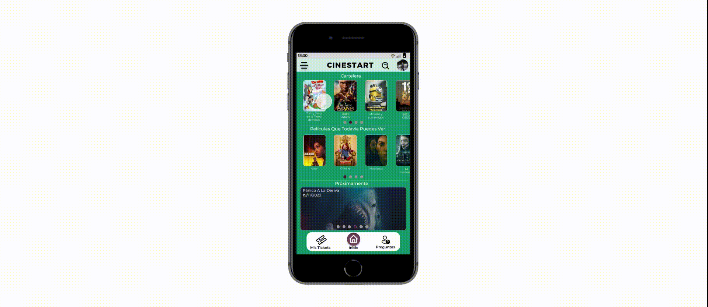

Mi rol: Product Designer, UX Writer, UX Researcher Interaction Designer, UI/Visual Designer
Responsabilidades: investigación de usuarios, creación de esquemas, creación de Arquitectura de la información creación de prototipos.
Duración: 09/2022 - 10/2022
CineStart es un cine localizado en el corazón de Salta capital y busca expandirse creando una app para llegara mas publico a través de medios digitales
El Problema
Los clientes no tienen forma de saber que películas están en cartelera y no disponen de tiempo para ir al cine para informarse y comprar los tickets.
El Objetivo
Crear una aplicación y un sitio web para que los clientes en cualquier momento puedan saber que películas están en cartelera y comprar las entradas desde cualquier sitio donde se encuentren.
Investigación de usuarios y creación de persona
La investigación de usuarios la realice recopilando información de las calificaciones y comentarios realizados en los demás cines locales a través de la web y la Playstore.
la mayor cantidad de comentaros son referidos a la atención, calidad y comodidad del servicio.
en cuanto a los sitios web los comentarios positivos van mayormente orientados a la facilidad de visualización de las películas y la forma de comprar los tickets y por parte de las negativas se enfocan en la poca información que se da del cine, sus servicios y prestaciones.
A partir de estos datos se detectaron los siguientes puntos débiles:
- Poca información de precios.
- Algunos cines no cuentan con sitio web o App.
- Algunos cines no dan la opción de comprar online, solo informan los horarios de los estrenos.
- Ninguno posee un apartado de preguntas frecuentes.
Con base en estos hallazgos, creamos dos personas que son nuestros usuarios objetivo


Bocetos
Realice varios bocetos diferentes con diferentes ideas de la misma pantalla de cada interacción,
seleccionando las que considere mejoreros y armando el mapa de sitio de la app.

Mapa del sitio (Arquitectura de la información)
Diseño inicial de interfaz de usuario y estructura alámbrica
El prototipo muestra el recorrido de compra del ticket por parte del cliente junto con el detalle de cada pestaña de la app.

Estudio de usabilidad
El estudio de usabilidad se llevó a cabo con 7 personas, hombres y mujeres de entre 18 y 55 años, a través de un formulario de 10 preguntas, la metodología fue de investigación moderada.
- Los usuarios tuvieron inconvenientes para encontrar el ticket luego de realizar la compra.
- Los usuarios mostraron disconformidad a la hora de realizar el pago ya que solo se podía con tarjeta de crédito/ debito.
- Los usuarios mostraron disconformidad a la hora de comprar ya que solo podían seleccionar una butaca y no varias.
- Los usuarios mostraron disconformidad a la hora de comprar ya que solo podían seleccionar una butaca y no varias.
- diversas preguntas como ¿Que significan el color de las butacas?

Prototipo de alta fidelidad
Al pasar del diseño de baja fidelidad al del alta fidelidad se pulieron los puntos esenciales recolectado a través del estudio de usabilidad agregando una barra de navegación para preguntas frecuentes y acceder a los tickets, ademas Se rediseño la pre visualización de la película separando la selección de día y horario, agregándola en una pestaña siguiente para mejorar el aspecto visual y la usabilidad.
Impacto
“Es un diseño sobrio y fácil de comprender junto con una linda paleta de colores, la versión refinada mejora bastante a comparación del modelo de baja fidelidad”
Participante B, Salta, Salta
“El proceso de compra es sencillo e intuitivo, sería una app que si utilizaría”
Participante C, Salta, Salta
Conclusión
A través de este proyecto aprendí la importancia de maquetar en papel, luego pasarlo a un diseño de baja fidelidad y pulirlo con lo que considero es unas de las mejores herramientas del Diseño UX que es la prueba de usabilidad, llevando así el diseño a la versión final reduciendo la cantidad de problemas de accesibilidad y estéticos.